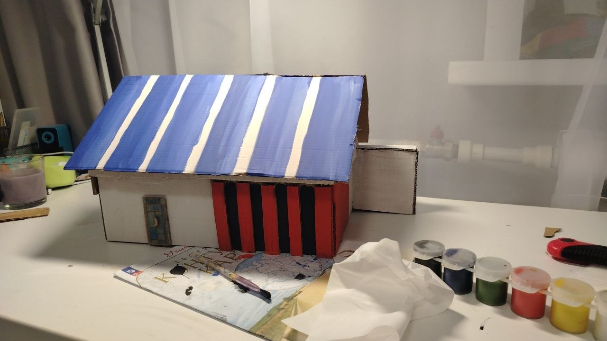

Авторы проекта (8 «Б» класс): Жигалов Роман, Константин Шушин, Поздняков Александр

ЦЕЛЬ: Создание точного и детализированного архитектурного макета здания кинотеатра «Эра» (г. Юрга) для изучения основ моделирования и архитектуры города.
ЗАДАЧИ:
ОТКРЫТИЕ: Торжественное открытие состоялось 31 января 1971 года. «Эра» стала первым широкоформатным кинотеатром в Юрге. Первым фильмом, показанным на огромном экране, стала американская лента об автогонщиках «Большой приз».
РАЗВИТИЕ: В 2000 году здание прошло полную реконструкцию. А в декабре 2018 года открылся второй кинозал. Сегодня Большой зал вмещает 175 зрителей (включая удобные диваны), а Малый - 44.
КУЛЬТУРНЫЙ ЦЕНТР: Долгие годы здесь не только демонстрируются фильмы, но и проводятся городские выставки, творческие встречи, конкурсы и фестивали, делая кинотеатр сердцем культурной жизни города.